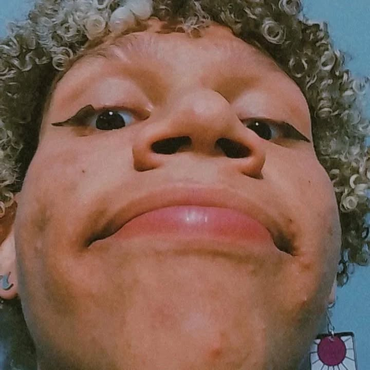
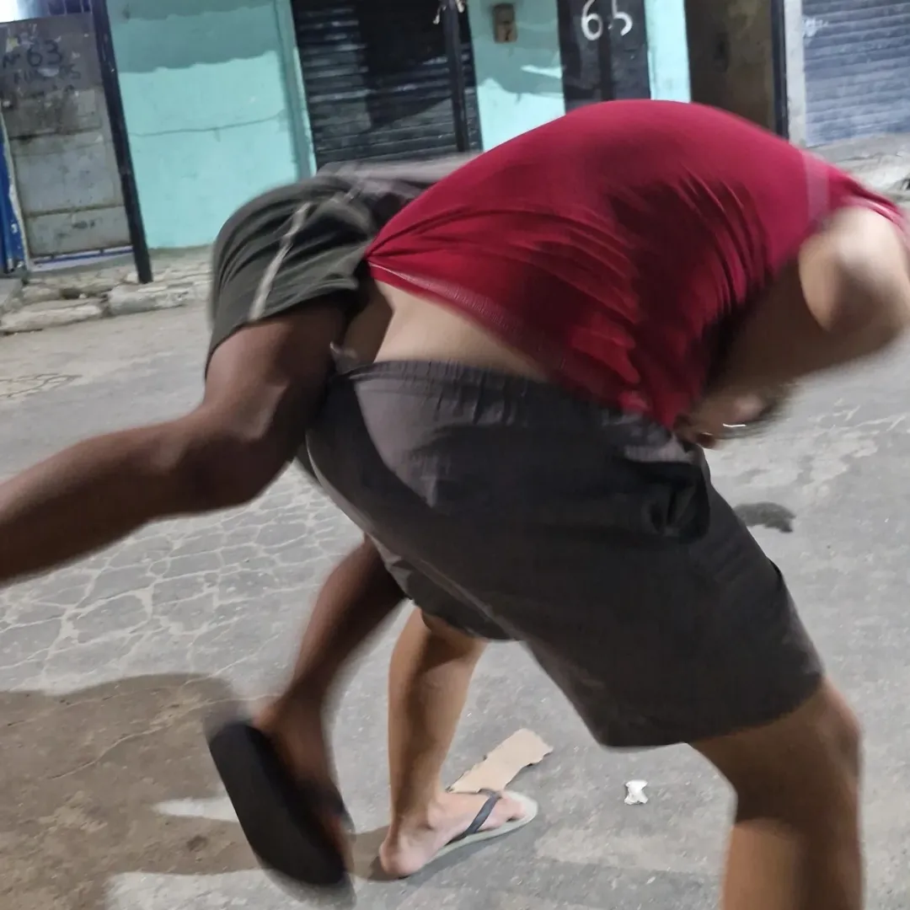
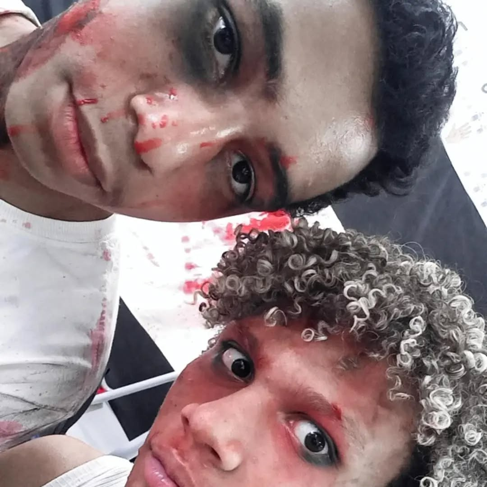
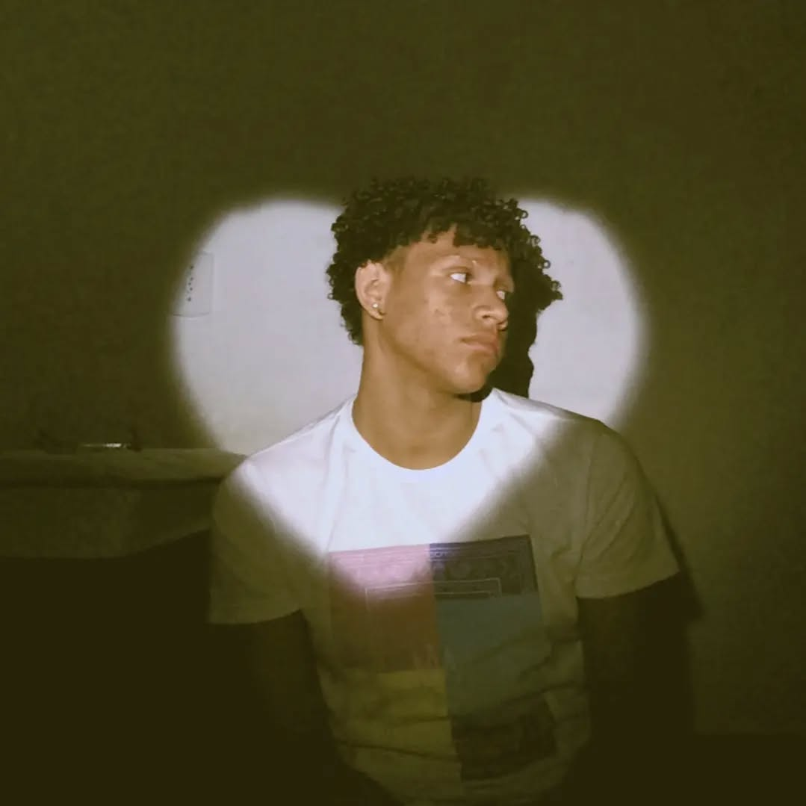

Quando a gente é novo demais, nem percebe que certas pessoas são presentes que a vida dá pra gente cuidar. Às vezes, esses presentes vêm embalados em risos, piadas internas, ou até em longas conversas no meio da madrugada. O nosso laço, JG, foi assim: nasceu de forma natural, quase como uma coincidência, mas se firmou com o tempo, como aquelas árvores que ninguém planta, mas que crescem grandes e fortes.

Caos bonito que é você
Não foi preciso muito esforço pra gostar de você. Você tem esse jeito meio caótico, meio poético, e totalmente humano. Você me mostrou que a amizade pode ser leve, sincera e, acima de tudo, livre. Com você, aprendi que a beleza da vida está nos detalhes pequenos: nos memes compartilhados, nos surtos de criatividade, nas conversas que começam bobas e acabam existenciais.

Silêncio também guarda carinho
Pode ser que os dias voem e as mensagens diminuam, mas o que foi construído com verdade permanece, mesmo no silêncio. Às vezes, é difícil encontrar palavras que expressem o quanto alguém é importante, e você sempre foi além das palavras. Você foi gesto, foi presença, foi porto seguro nos meus dias turbulentos.
Liberdade é ter onde voltar
Em cada brincadeira aleatória, em cada madrugada conversando besteira, havia algo sagrado: a liberdade de ser a gente mesmo. E isso, meu amigo, é raro. Poucos laços na vida se constroem com esse tipo de lealdade. A vida vai nos empurrar para lugares distintos, com rotinas diferentes e novas responsabilidades, mas o que a gente viveu não se apaga. Se transforma. Cresce junto com a gente.

Sorrisos que sobreviveram ao caos e vinheram como uma tempestade boa
Guardo em mim todos os momentos em que você me arrancou um sorriso no meio do caos. E mesmo que o tempo tente diluir essas memórias, elas sempre terão cheiro de eternidade. Porque amigos assim não passam: permanecem. Em gestos pequenos, em músicas compartilhadas, em frases que só nós dois entendemos.
E quando a vida for dura, e ela sempre é, espero que você lembre de quem você é: uma tempestade de criatividade, um trovão de risadas e uma calmaria de afeto. Eu torço para que todos os seus aniversários sejam reflexo da sua alma: intensos, profundos e reais. Porque você merece mais do que o mundo pode te dar, merece um universo só seu.
Ainda que os anos mudem
Talvez nunca mais tenhamos os mesmos 13, 14 anos, os mesmos medos bobos, ou as mesmas tardes livres para conversar sobre tudo e nada. Mas levo comigo a certeza de que em algum canto do mundo tem alguém que te admira e te agradece por ter sido um pedaço essencial da sua história.
Ainda quero ter muitas aventuras contigo antes das nossas mortes.
Que seas mi compañera en ellas.
My Best Friend.
Mi complice.
My duo in lol.
Pero sobretodo.
Alguien que sepa que es mi relevo en esta vida.
Que mientras todo lo demas nos golpee, sabremos el uno al otro que siempre
nos tendremos para ser los mastiles de cada uno, no importa que tan
fuerte sean los latigazos del entorno, nunca dejaremos de guiarnos
con la mirada y el roce de nuestras manos. Siempre nos diran a donde ir
y si no sabemos a donde, encontraremos un nuevo hogar en nosotros.
Te amo JG, espero que compreendas os meus sentimentos, por mais que sejam tão primitivos.

Um presente chamado agora
Então, feliz aniversário. Feliz vida. Feliz reencontro, quando ele vier.